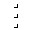
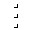

Yeah, this is where the filters content is going to go in. I'm just adding filler text right now to see how the overflow and everything are going to be handled.
September 12, 2012
3phase
Version: Aspen Plus V8.0
Methylchlorate is produced by esterification of chloroacetic acid with methanol. The forward and reverse esterification reactions occur in the reboiler of a distillation column. The column is used to separate the ester product from the reactants. Because ester and water are partially immiscible, two liquid phrases occur in the middle section of the column. This application illustrates many unique features of Aspen Plus: 1) Reactive distillation 2) Three-phase distillation 3) Column with total boil (i.e. zero liquid bottoms flow rate) 4) Internal column specification with feed flow manipulation. This application also uses the decanter model.